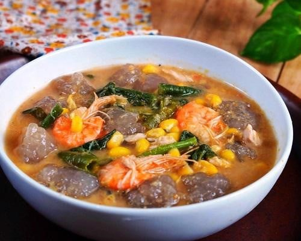

<< Resep Makanan
Bahan |
Bumbu |
Cara Membuat
Kapurung

Kapurung merupakan salah satu makanan khas tradisional di Sulawesi Selatan,
terutama masyarakat daerah Luwu (Kota Palopo, Kabupaten Luwu, Luwu Utara,
Luwu Timur).
Bahan-bahan:
- Tepung sagu - 150 gram
- Air - 450 ml
- Jagung, pipil bijinya - 3 buah
- Kacang panjang, potong-potong - 5 batang
- Bayam, petik daunnya - 2 ikat
- Air - 1 liter
- Udang, rebus hingga matang - 10 ekor
- Jeruk nipis, ambil air perasannya - 3 buah
- Garam - 1 sdt
- Penyedap rasa, opsional - 1/2 sdt
Bumbu halus:
- Cabai rawit - 10 buah
- terasi udang, bakar - 1 bungkus
- Kacang tanah, sangrai - 1 genggam
- Fillet ikan cakalang - secukupnya
CARA MEMBUAT ADONAN SAGU (KAPURUNG)
- Dalam wadah, campur tepung sagu dengan 300 ml air. Aduk rata lalu sisihkan.
- Panaskan 150 ml sisa air hingga mendidih.
- Masukkan larutan sagu ke dalam air mendidih, lalu aduk terus hingga mengental dan adonan menyerupai lem. Matikan api.
- Siapkan 500 ml air matang dalam wadah.
- Bulat-bulatkan adonan sagu dengan menggunakan 2 buah sumpit atau tusuk sate, lalu masukkan dalam wadah air.
CARA MEMBUAT IKAN MASAK KUNING
- Dalam wadah, lumuri ikan dengan air asam, garam, dan kunyit hingga merata.
- Tambahkan air, lalu masak ikan hingga matang. Angkat.
- Ambil ikan lalu fillet dagingnya. Sisihkan dan satukan bersama bumbu halus lainnya.
- Sisihkan kuahnya.
CARA MEMBUAT SAYUR
- Dalam panci, didihkan air.
- Masukkan jagung, lalu biarkan masak hingga setengah matang.
- Masukkan kacang panjang. Masak hingga empuk.
- Masukkan bayam. Masak hingga matang. Matikan api.
KEMBALI